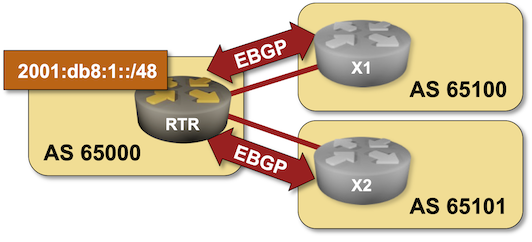
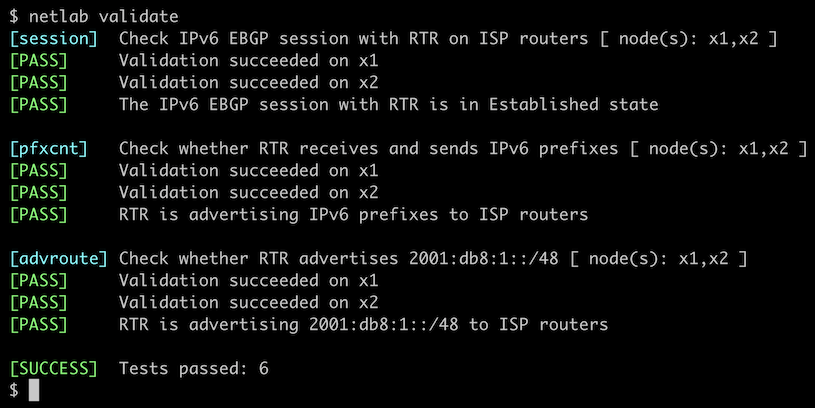

Configure BGP for IPv6
In the previous lab exercises, you configured EBGP sessions with two upstream ISPs and advertised IPv4 prefixes to them. Now, let’s add IPv6 to the mix.

The routers in your lab use the following BGP AS numbers. Each upstream router advertises an IPv4 prefix, an IPv6 prefix, and the default route.
BGP AS Numbers
| Node/ASN | Router ID | Advertised prefixes |
|---|---|---|
| AS65000 | ||
| rtr | 10.0.0.1 | 192.168.42.0/24 10.0.0.1/32 |
| AS65100 | ||
| x1 | 10.0.0.10 | 192.168.100.0/24 2001:db8:100::/48 |
| AS65101 | ||
| x2 | 10.0.0.11 | 192.168.101.0/24 2001:db8:101::/48 |
Your router has these EBGP IPv4 neighbors. netlab configures them automatically; if you’re using some other lab infrastructure, you’ll have to configure them manually.
| Node | Neighbor | Neighbor IPv4 | Neighbor AS |
|---|---|---|---|
| rtr | x1 | 10.1.0.2 | 65100 |
| rtr | x2 | 10.1.0.6 | 65101 |
You will also have to establish IPv6 EBGP sessions with the upstream ISPs using these parameters:
| Node | Neighbor | Neighbor AS | Neighbor IPv6 |
|---|---|---|---|
| rtr | x1 | 65100 | 2001:db8:42::2 |
| rtr | x2 | 65101 | 2001:db8:42:1::2 |
Device Requirements
- Use any device supported by the netlab BGP configuration module for customer and external routers.
- netlab can configure default route origination on almost all supported devices. You’ll have to configure BGP default route origination yourself if you want to use an unsupported device for X1 or X2.
- You can do automated lab validation with Arista EOS or FRRouting running on X1 and X2.
Start the Lab
You can start the lab on your own lab infrastructure or in GitHub Codespaces (more details):
- Change directory to
basic/4-ipv6 - (Optional) enable the extra tools you want to use
- Execute netlab up
- Log into your device (RTR) with netlab connect rtr and verify IP addresses and basic BGP configuration.
netlab will configure IPv4 addressing, IPv6 addressing, and BGP for IPv4 on your router, resulting in a configuration similar to what you should have done in Advertise IPv4 Prefixes to BGP Neighbors.
If you’re not using netlab, continue with the configuration you made during the previous exercise and add IPv6 addresses to your router’s loopback- and WAN interfaces before proceeding.
Configuration Tasks
You have to:
- Establish IPv6 EBGP sessions with the upstream providers.
- Advertise IPv6 prefix
2001:db8:1::/48to them.
Most BGP implementations treat IPv4 and IPv6 in almost the same way and use address families within BGP configuration to configure them. The details vary:
- On many devices (including Cisco IOS, Arista EOS and FRRouting), you must configure IPv4 and IPv6 BGP sessions within the BGP configuration and then activate those sessions within individual address families.
- Some devices (for example, Nexus OS) expect you to configure BGP neighbors within the address families
- You might encounter older implementations (for example, old Cisco IOS versions) that configure IPv4 parameters within BGP configuration and IPv6 parameters within the IPv6 address family.
I know you’ll figure out those details. Just keep in mind that there’s not much difference (usually) between IPv4 and IPv6, and you already know how to setup EBGP sessions and advertise IPv4 prefixes in BGP. Just do the same thing for IPv6.
Tip
Not sure how to configure BGP for IPv6 on your device? You’ll find pointers to the relevant vendor documentation in the Further Reading section.
Verification
You can use the netlab validate command if you use FRRouting or Arista EOS on the external routers.

If that command fails or you’re using another network operating system on the external routers, it’s time to start a troubleshooting session.
Before digging into the details, check that the IPv6 BGP sessions are up. Use a command similar to show bgp ipv6 summary to verify that:
rtr#sh bgp ipv6 unicast summary
BGP summary information for VRF default
Router identifier 10.0.0.1, local AS number 65000
Neighbor Status Codes: m - Under maintenance
Description Neighbor V AS MsgRcvd MsgSent InQ OutQ Up/Down State PfxRcd PfxAcc
2001:db8:42::2 4 65100 9 8 0 0 00:00:09 Estab 2 2
2001:db8:42:1::2 4 65101 9 8 0 0 00:00:09 Estab 2 2
Warning
For historical reasons, many network devices have an inconsistent CLI command structure – the IPv4 BGP commands are more straightforward than IPv6 BGP commands. For example, you can use show bgp summary on Arista EOS to display BGP summary information for the IPv4 address family. At the same time, you have to use show ipv6 unicast summary to display the same information for the IPv6 address family.
The IPv6 prefixes you want to advertise to EBGP neighbors must be in your router’s BGP table first. A command similar to show bgp ipv6 or show bgp ipv6 unicast is thus a good starting point. This is how Arista EOS displays it:
rtr#show bgp ipv6 unicast
BGP routing table information for VRF default
Router identifier 10.0.0.1, local AS number 65000
Route status codes: s - suppressed contributor, * - valid, > - active, E - ECMP head, e - ECMP
S - Stale, c - Contributing to ECMP, b - backup, L - labeled-unicast
% - Pending BGP convergence
Origin codes: i - IGP, e - EGP, ? - incomplete
RPKI Origin Validation codes: V - valid, I - invalid, U - unknown
AS Path Attributes: Or-ID - Originator ID, C-LST - Cluster List, LL Nexthop - Link Local Nexthop
Network Next Hop Metric AIGP LocPref Weight Path
* > ::/0 2001:db8:42::2 0 - 100 0 65100 i
* ::/0 2001:db8:42:1::2 0 - 100 0 65101 i
* > 2001:db8:1::/48 - - - - 0 ?
* > 2001:db8:100::/48 2001:db8:42::2 0 - 100 0 65100 i
* > 2001:db8:101::/48 2001:db8:42:1::2 0 - 100 0 65101 i
However, you really want to know if the prefixes are advertised to the EBGP neighbors. Some network devices have a show command that displays prefixes advertised to a neighbor. Here’s how that command works on Arista EOS:
rtr#show bgp neighbor 2001:db8:42::2 advertised-routes
BGP routing table information for VRF default
Router identifier 10.0.0.1, local AS number 65000
Route status codes: s - suppressed contributor, * - valid, > - active, E - ECMP head, e - ECMP
S - Stale, c - Contributing to ECMP, b - backup, L - labeled-unicast, q - Queued for advertisement
% - Pending BGP convergence
Origin codes: i - IGP, e - EGP, ? - incomplete
RPKI Origin Validation codes: V - valid, I - invalid, U - unknown
AS Path Attributes: Or-ID - Originator ID, C-LST - Cluster List, LL Nexthop - Link Local Nexthop
Network Next Hop Metric AIGP LocPref Weight Path
* > 2001:db8:1::/48 2001:db8:42::1 - - - - 65000 ?
* > 2001:db8:101::/48 2001:db8:42::1 - - - - 65000 65101 i
Check the BGP table on the remote router to ensure everything is okay. While that’s a bit hard to do in real life, it’s trivial in a lab – connect to X1 or X2 with netlab connect (or SSH into them if you’re not using netlab), start vtysh (if you’re using FRRouting) and execute the show ip bgp command:
$ netlab connect x1
Connecting to container clab-originate-x1, starting bash
Use vtysh to connect to FRRouting daemon
x1(bash)#sudo vtysh
Hello, this is FRRouting (version 7.5+cl4.4.0u4).
Copyright 1996-2005 Kunihiro Ishiguro, et al.
x1# show bgp ipv6 unicast
BGP table version is 3, local router ID is 10.0.0.10, vrf id 0
Default local pref 100, local AS 65100
Status codes: s suppressed, d damped, h history, * valid, > best, = multipath,
i internal, r RIB-failure, S Stale, R Removed
Nexthop codes: @NNN nexthop's vrf id, < announce-nh-self
Origin codes: i - IGP, e - EGP, ? - incomplete
Network Next Hop Metric LocPrf Weight Path
*> 2001:db8:1::/48 2001:db8:42::1 0 65000 ?
*> 2001:db8:100::/48
:: 0 32768 i
*> 2001:db8:101::/48
2001:db8:42::1 0 65000 65101 i
Displayed 3 routes and 3 total paths
Next:
- If you’re interested in BGP routing policies, proceed to Use BGP Weights to prefer one of the upstream ISPs.
- If you want to build networks with more than one BGP router, continue with Running BGP in Larger Networks
Further Reading
The following documents describe how to configure IPv6 BGP neighbors, activate them in the IPv6 address family, and advertise IPv6 prefixes on commonly used network devices.
FRRouting, Cisco IOS XR, and Junos use the same commands to configure static routes and advertise IPv6 prefixes as they do for IPv4; you’ll find them in the Further Reading section of the Advertise IPv4 Prefixes to BGP Neighbors lab exercise. The documentation describing how to configure EBGP neighbors and the default EBGP policy (FRRouting and Cisco IOS XR) is in the Further Reading section of the Configure a Single EBGP Session lab exercise.
| Platform | Configuration guidelines |
|---|---|
| Cisco IOS XE | |
| Arista EOS | |
| FRRouting | |
| Cisco IOS XR (release 26.x) | |
| Junos |
You might also find these blog posts useful:
- IPv4 BGP vs IPv6 BGP explains how multiprotocol BGP uses address families to carry IPv6 prefixes and why you have to activate IPv6 neighbors in the IPv6 address family.
- Use the explicit “address-family ipv4” in BGP configurations (also mentioned in the single EBGP session lab exercise) describes how to activate BGP neighbors within an address family; you’ll have to do the same for your IPv6 neighbors.
Reference Information
This lab uses a subset of the 4-router lab topology. The following information might help you if you plan to build custom lab infrastructure:
Lab Wiring
This lab uses a subset of the 4-router lab topology:
| Origin Device | Origin Port | Destination Device | Destination Port |
|---|---|---|---|
| rtr | Ethernet1 | x1 | eth1 |
| rtr | Ethernet2 | x2 | eth1 |
Lab Addressing
| Node/Interface | IPv4 Address | IPv6 Address | Description |
|---|---|---|---|
| rtr | 10.0.0.1/32 | Loopback | |
| Ethernet1 | 10.1.0.1/30 | 2001:db8:42::1/64 | rtr -> x1 |
| Ethernet2 | 10.1.0.5/30 | 2001:db8:42:1::1/64 | rtr -> x2 |
| x1 | 192.168.100.1/24 | 2001:db8:100:1::1/48 | Loopback |
| eth1 | 10.1.0.2/30 | 2001:db8:42::2/64 | x1 -> rtr |
| x2 | 192.168.101.1/24 | 2001:db8:101:1::1/48 | Loopback |
| eth1 | 10.1.0.6/30 | 2001:db8:42:1::2/64 | x2 -> rtr |